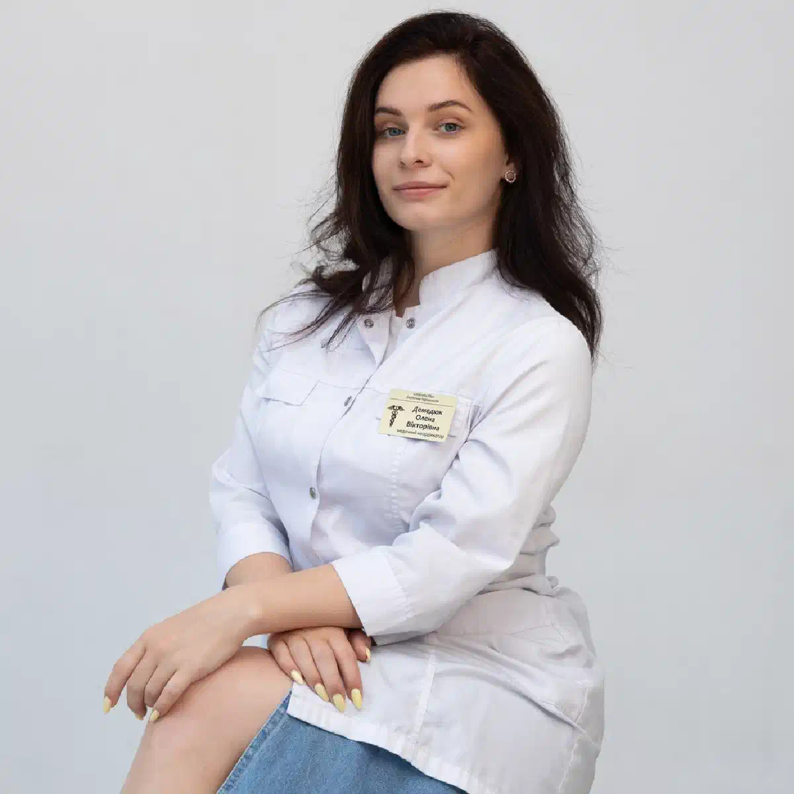

+38(068)
79 72 782
+38(068)
79 72 782Консультация и вызов нарколога в Киевском районе Харькова
Анонимная наркологическая помощь на дому 24/7


Бесплатная консультация, работаем круглосуточно 24/7
Анонимная наркологическая помощь на дому 24/7

Дата написания: 13 окт. 2026 г.
Последнее обновление: 13 окт. 2026 г.
Консультация и вызов нарколога в Киевском районе Харькова — возможность получить профессиональную медицинскую помощь при алкогольной и наркотической зависимости, интоксикации, запойных состояниях и синдроме отмены психоактивных веществ. Наркологическая помощь может включать первичный осмотр, оценку состояния пациента, медикаментозное лечение, инфузионную терапию по показаниям и рекомендации по дальнейшему восстановлению. Вызов нарколога на дом в Харькове позволяет организовать медицинское обследование в привычной обстановке, если состояние пациента допускает амбулаторное лечение. Выездная помощь доступна при наличии обслуживания соответствующего адреса в Киевском районе, включая Журавлёвку, отдельные районы Салтовки и центральную часть города. При тяжёлой интоксикации, судорогах, нарушениях сознания и дыхания необходима экстренная медицинская помощь.
Консультация нарколога в Киевском районе Харькова необходима пациентам, столкнувшимся с последствиями употребления алкоголя, наркотических веществ или лекарственных препаратов, способных вызывать зависимость. Во время приёма врач оценивает жалобы, продолжительность употребления, наличие запоев, симптомы отмены и сопутствующие заболевания. Консультация помогает определить необходимость обследования, медикаментозного лечения, психологической поддержки или госпитализации. Обратиться к специалисту можно не только при выраженных симптомах, но и на ранних этапах зависимости. Своевременная медицинская помощь позволяет выявить опасные нарушения и разработать индивидуальный план лечения.
Обращение к наркологу рекомендуется при утрате контроля над употреблением алкоголя или наркотиков, повторных запоях, появлении выраженной тяги к психоактивным веществам и ухудшении самочувствия после прекращения их приёма. Поводом для консультации могут стать тревожность, бессонница, тремор рук, повышенная потливость, снижение аппетита и изменения поведения. Консультация врача-нарколога в Харькове позволяет оценить степень зависимости, выявить возможные осложнения и подобрать подходящие методы терапии. Особенно важно обратиться за помощью при предыдущих эпизодах судорог, тяжёлой абстиненции или сочетанном употреблении нескольких веществ.
Наркологическая помощь может потребоваться при выраженной слабости, тошноте, повторной рвоте, треморе, тахикардии, повышенном артериальном давлении, тревожности и нарушениях сна после употребления алкоголя. При наркотической интоксикации возможны выраженное возбуждение, панические реакции, нарушения координации, необычная сонливость и изменения поведения. Особую опасность представляют судороги, потеря сознания, замедление дыхания, боль в груди и выраженная спутанность. При появлении таких симптомов необходимо немедленно вызвать скорую помощь по номеру 103. Срочная наркологическая помощь в Харькове при стабильном состоянии может включать обследование и определение дальнейшей тактики лечения.
Вызов нарколога на дом в Киевском районе Харькова позволяет организовать первичный медицинский осмотр пациента без посещения клиники. Такой формат может быть удобен при слабости, тошноте, тревожности и других неосложнённых симптомах. Перед приездом специалиста необходимо сообщить возраст пациента, продолжительность употребления алкоголя или наркотиков, время последнего приёма и основные жалобы. Врач проводит обследование, оценивает тяжесть состояния и определяет возможность лечения дома. При необходимости назначаются препараты, инфузионная терапия или дополнительные исследования. Если выявлены признаки тяжёлой интоксикации либо опасной абстиненции, пациенту рекомендуется госпитализация.
Круглосуточная наркологическая помощь в Киевском районе Харькова может быть востребована при ухудшении состояния после употребления алкоголя, развитии симптомов отмены или необходимости консультации специалиста. Возможность выезда в ночное время следует уточнять при обращении в медицинскую службу. Врач оценивает состояние пациента и определяет необходимый объём медицинских мероприятий. При этом круглосуточный вызов нарколога не заменяет экстренную помощь при угрожающих жизни состояниях. При судорогах, нарушении дыхания, потере сознания или подозрении на передозировку необходимо немедленно обратиться в службу экстренной медицинской помощи.
Анонимная консультация нарколога в Харькове позволяет обсудить проблемы, связанные с употреблением алкоголя и наркотиков, с соблюдением принципов конфиденциальности. Во время обращения пациент может получить информацию о возможных методах обследования и лечения, не опасаясь осуждения со стороны медицинского персонала. Порядок оформления документации и возможность обслуживания без отдельных форм регистрации зависят от действующего законодательства и условий медицинского учреждения. Анонимная наркологическая помощь на дому предполагает соблюдение медицинской тайны и защиту персональных данных. При этом для безопасного лечения врачу необходимо получить достоверную информацию о состоянии здоровья и употребляемых веществах.
Срочная консультация нарколога может потребоваться при появлении симптомов алкогольной абстиненции, выраженной тревожности, бессонницы, тремора и учащённого сердцебиения после прекращения употребления спиртного. Поводом для обращения также становятся повторные запои, признаки зависимости от наркотических веществ и ухудшение общего состояния. Срочный вызов нарколога на дом позволяет оценить ситуацию и определить, возможно ли амбулаторное лечение. Однако при тяжёлой рвоте с обезвоживанием, судорогах, галлюцинациях, выраженной спутанности сознания, затруднении дыхания или подозрении на передозировку необходимо вызывать экстренную медицинскую помощь, не дожидаясь домашнего визита.
Первичная консультация начинается со сбора жалоб и анамнеза. Врач уточняет продолжительность употребления алкоголя или наркотиков, частоту приёма, количество вещества, время последнего употребления и наличие предыдущих осложнений. Дополнительно оцениваются хронические заболевания, принимаемые лекарства и психологическое состояние пациента. Первичная консультация нарколога в Харькове может включать объективный осмотр, измерение давления, пульса и других показателей. На основании полученной информации врач определяет необходимость дальнейших обследований, медикаментозной терапии, психотерапии или стационарного лечения. Пациенту объясняют предполагаемую тактику, ограничения и возможные риски.
Во время домашнего осмотра нарколог оценивает уровень сознания, ориентировку, дыхание, частоту сердечных сокращений, артериальное давление, температуру и сатурацию кислорода. При необходимости проводится ЭКГ, измерение уровня глюкозы и оценка неврологических симптомов. Врач обращает внимание на признаки обезвоживания, выраженность тремора, нарушения координации и возможные проявления интоксикации. Осмотр нарколога на дому в Харькове помогает определить тяжесть состояния и необходимость дополнительных исследований. При подозрении на серьёзные осложнения пациенту рекомендуют обследование и лечение в стационарных условиях.
Выездная наркологическая помощь может быть организована в различных частях Киевского района Харькова. Вызов нарколога на Журавлёвку, в центральную часть города и обслуживаемые кварталы Салтовки позволяет получить медицинский осмотр по месту нахождения пациента. Возможность выезда также может распространяться на улицу Академика Павлова, район станции метро «Киевская», улицу Сумскую и прилегающие территории в пределах района. Конкретное время прибытия зависит от адреса, дорожной ситуации и доступности медицинского персонала. Независимо от местонахождения пациента решение о домашнем лечении принимается после оценки состояния и исключения опасных осложнений.
После употребления большого количества алкоголя могут возникать тошнота, рвота, головная боль, слабость, головокружение и нарушения координации. Наркологическая помощь при алкогольной интоксикации начинается с оценки сознания, дыхания, кровообращения и степени обезвоживания. При стабильном состоянии врач определяет необходимость наблюдения, восполнения жидкости и симптоматической терапии. Инфузионные растворы назначаются только при наличии показаний. При тяжёлом алкогольном отравлении, выраженной сонливости, нарушениях дыхания или потере сознания необходима скорая помощь при алкогольном отравлении и экстренная госпитализация. Домашняя капельница не является альтернативой неотложному лечению.
Вывод из запоя на дому в Киевском районе Харькова может рассматриваться при неосложнённой алкогольной абстиненции, стабильном состоянии пациента и отсутствии факторов высокого риска. После длительного употребления спиртного часто возникают тремор, тревожность, бессонница, потливость, тахикардия и снижение аппетита. Врач оценивает выраженность синдрома отмены, предыдущие эпизоды абстиненции и наличие сопутствующих заболеваний. В зависимости от состояния назначаются лекарственные препараты, коррекция обезвоживания и медицинское наблюдение. Лечение алкогольной абстиненции в Харькове должно учитывать риск судорог и делирия. При тяжёлых проявлениях необходимо стационарное лечение.
Капельница от алкоголя на дому в Харькове может назначаться при обезвоживании, нарушениях водно-электролитного баланса и других медицинских показаниях. Перед процедурой врач оценивает давление, пульс, функцию сердечно-сосудистой системы и противопоказания. Состав раствора и объём инфузии подбираются индивидуально. При необходимости назначается тиамин и проводится коррекция выявленных нарушений. Капельница не является универсальным способом устранения похмелья, не ускоряет существенно метаболизм алкоголя и не предотвращает самостоятельно судороги или делирий. При выраженной абстиненции требуется специальное медикаментозное лечение.
Консультация нарколога при алкогольной зависимости необходима для оценки выраженности заболевания и выбора долгосрочной программы лечения. Врач уточняет частоту употребления спиртного, наличие запоев, утрату контроля над количеством алкоголя, симптомы отмены и предыдущий опыт лечения. После обследования пациенту могут рекомендовать медикаментозную терапию, психотерапию и реабилитацию. Лечение алкоголизма в Харькове направлено на снижение риска рецидивов, восстановление физического здоровья и формирование устойчивой мотивации к отказу от спиртного. Детоксикация при необходимости становится лишь начальным этапом комплексной помощи.
Наркотическая интоксикация может сопровождаться различными симптомами в зависимости от употреблённого вещества. Опиоиды способны вызывать угнетение дыхания и потерю сознания, стимуляторы — тахикардию, возбуждение, повышение температуры и артериального давления. Наркологическая помощь при наркотической интоксикации требует определения вероятного вещества, оценки сознания, дыхания и состояния сердечно-сосудистой системы. При подозрении на опиоидную передозировку необходимы экстренная помощь и своевременное применение налоксона при его наличии. При судорогах, боли в груди, выраженной гипертермии или нарушениях сознания требуется госпитализация. Домашние процедуры не должны задерживать экстренное лечение.
Капельница от наркотиков на дому в Харькове может применяться только при отдельных осложнениях, когда имеются показания к инфузионной терапии и состояние пациента позволяет проводить лечение вне стационара. Например, внутривенные растворы могут использоваться при выраженном обезвоживании или нарушениях электролитного баланса. Однако состав капельницы не является универсальным для всех наркотических веществ. При передозировке опиоидов основное значение имеют восстановление дыхания и налоксон, а при тяжёлой интоксикации стимуляторами — экстренная медицинская помощь и специализированное лечение. Лечение наркотической интоксикации в Харькове определяется характером вещества, симптомами и тяжестью состояния.
Абстинентный синдром развивается после прекращения или уменьшения употребления вещества, к которому сформировалась физическая зависимость. Лечение алкогольной абстиненции направлено на предупреждение судорог, делирия и других осложнений, а также облегчение симптомов отмены. При опиоидной зависимости могут применяться специфические препараты, включая бупренорфин или метадон в рамках соответствующих программ лечения. При зависимости от стимуляторов основное значение имеют симптоматическая терапия и психологическая поддержка. Лечение наркотической абстиненции в Харькове требует индивидуального подхода, поскольку риски отмены различаются в зависимости от вещества. Самостоятельный приём седативных препаратов без назначения врача может быть опасен.
Домашнее лечение не подходит пациентам с тяжёлой алкогольной абстиненцией, судорогами, галлюцинациями, выраженной спутанностью сознания, нестабильным дыханием и серьёзными нарушениями кровообращения. Госпитализация также может потребоваться при тяжёлых сопутствующих заболеваниях и подозрении на передозировку наркотиков. Наркологический стационар в Харькове обеспечивает возможность медицинского наблюдения, проведения необходимых исследований и своевременной коррекции лечения. При угрожающих жизни состояниях помощь должна оказываться экстренно в учреждении соответствующего профиля. Если пациент потерял сознание, у него появились судороги или затруднение дыхания, необходимо немедленно вызвать скорую помощь по номеру 103.
Выбор лекарственных препаратов зависит от причины обращения, тяжести симптомов и сопутствующих заболеваний. При обезвоживании могут назначаться инфузионные растворы, при отдельных дефицитных состояниях — соответствующая коррекция. При алкогольной абстиненции используются препараты для контроля синдрома отмены, включая бензодиазепины при наличии показаний и возможности безопасного наблюдения. Медикаментозная наркологическая помощь на дому не предполагает универсальной схемы лечения. При наркотической интоксикации терапия зависит от типа вещества, а тяжёлые отравления требуют специализированной неотложной помощи. Все препараты назначаются после обследования пациента.
Продолжительность домашнего визита зависит от состояния пациента, объёма обследования и назначенных процедур. Первичная консультация включает сбор анамнеза, оценку жалоб, объективный осмотр и определение дальнейшей тактики. Если имеются показания к инфузионной терапии, время оказания помощи увеличивается и зависит от объёма раствора и скорости введения. Выезд нарколога на дом в Харькове может включать дополнительные измерения жизненно важных показателей и оценку динамики состояния. Точная продолжительность медицинской помощи определяется индивидуально. При необходимости длительного или круглосуточного наблюдения пациенту рекомендуется стационар.
Перед приездом врача желательно подготовить информацию о возрасте пациента, продолжительности употребления алкоголя или наркотиков, времени последнего приёма вещества и основных симптомах. Полезно иметь сведения о хронических заболеваниях, аллергических реакциях, принимаемых лекарствах и предыдущих эпизодах тяжёлой абстиненции. Необходимо обеспечить доступ медицинскому специалисту и возможность проведения осмотра. До консультации не следует самостоятельно назначать седативные препараты или пытаться лечить человека неизвестными лекарственными средствами. Подготовка к вызову нарколога на дом помогает быстрее оценить состояние пациента и выбрать безопасный объём медицинской помощи.
Близкие люди часто первыми замечают изменения поведения, повторные запои, ухудшение здоровья и признаки зависимости. Консультация нарколога для родственников позволяет обсудить симптомы заболевания, способы общения с пациентом и возможные варианты организации лечения. Специалист может объяснить, как мотивировать человека обратиться за помощью, какие действия недопустимы и когда необходимо вызывать скорую помощь. Особое внимание уделяется добровольному согласию на лечение и уважению личных границ пациента. Родственникам важно понимать, что самостоятельное назначение препаратов или принудительные домашние процедуры могут привести к опасным последствиям.
После осмотра и проведения назначенных процедур необходимо соблюдать рекомендации врача, принимать препараты только по назначенной схеме и отслеживать изменение состояния. При появлении новых симптомов или ухудшении самочувствия требуется повторная медицинская оценка. Если помощь оказывалась по поводу алкогольной или наркотической абстиненции, важно обсудить дальнейшее лечение зависимости. Анонимное лечение алкоголизма в Харькове может включать медикаментозную поддержку, психотерапию и реабилитацию. При наркотической зависимости также могут применяться специальные программы длительного лечения. Основная задача последующего наблюдения — снизить риск рецидива и поддержать восстановление пациента.
Стоимость консультации нарколога в Киевском районе Харькова начинается от 1500 грн.
| Популярные услуги | Цена |
|---|---|
| Нарколог Харьков | От 1500 грн |
| Капельница от алкоголя | От 2199 грн |
| Вывод из запоя на дому | От 2199 грн |
| Кодирование от алкоголизма | От 6000 грн |
Чтобы организовать вызов нарколога на дом в Киевском районе Харькова, необходимо связаться с медицинской службой и сообщить адрес, возраст пациента, основные жалобы, продолжительность употребления алкоголя или наркотиков и время последнего приёма вещества. Важно заранее предупредить о хронических заболеваниях, принимаемых препаратах и ранее перенесённых осложнениях. Выездная помощь может быть доступна жителям Журавлёвки, обслуживаемых частей Салтовки, района станции метро «Киевская», улицы Сумской и других территорий Киевского района. После осмотра врач определяет возможность домашнего лечения, необходимость дополнительных процедур или госпитализации. Круглосуточный вызов нарколога следует предварительно согласовать с медицинской службой. При судорогах, потере сознания, нарушениях дыхания или других угрожающих жизни симптомах необходимо немедленно вызвать скорую помощь по номеру 103.
Телефон для консультации и вызова нарколога на дом в Харькове: +38(050-021-69-57)

Статья проверена экспертом
Могучев Станислав
Врач терапевт, ординатор
Возможно интересная статья:
Что делать, если человек в запое отказывается от помощи

Начинать лечение стоит уже тогда, когда употребление алкоголя становится регулярным, человеку сложно контролировать количество выпитого, появляются запои, абстинентный синдром, проблемы со здоровьем, работой или отношениями с близкими. Чем раньше человек обращается за помощью, тем меньше риск тяжёлых осложнений и прогрессирования зависимости.
Алкогольная зависимость относится к хроническим расстройствам, однако при правильно подобранном лечении можно добиться длительной устойчивой ремиссии и полностью отказаться от употребления алкоголя. Результат зависит от мотивации пациента, тяжести зависимости, продолжительности употребления и соблюдения рекомендаций врача.
Лечение начинается с консультации и оценки состояния пациента. Врач уточняет длительность и характер употребления алкоголя, наличие запоев, симптомы абстиненции, хронические заболевания и предыдущие попытки лечения. Если пациент находится в запое или испытывает выраженный синдром отмены, первым этапом может быть детоксикация и стабилизация состояния.
Отдельные этапы лечения алкогольной зависимости могут проводиться на дому. Это может быть вывод из запоя, детоксикация, лечение лёгкого или умеренного абстинентного синдрома, консультация врача и последующее медикаментозное сопровождение.
Стационар может потребоваться при тяжёлом абстинентном синдроме, длительном запое, судорогах, галлюцинациях, спутанности сознания, подозрении на алкогольный делирий, выраженных нарушениях давления или сердечного ритма, а также при тяжёлых сопутствующих заболеваниях. В стационаре состояние пациента можно контролировать круглосуточно.
Если пациент находится в запое, первым этапом обычно становится безопасное прекращение употребления алкоголя и лечение абстинентного синдрома. После стабилизации физического состояния можно переходить к дальнейшему лечению зависимости, противорецидивной терапии, психотерапии и другим методам.
Лечение может включать медикаментозную терапию, детоксикацию, противорецидивное лечение, психотерапию, работу с мотивацией, кодирование и реабилитационные программы. Обычно наибольшую эффективность даёт комплексный подход, когда врач подбирает методы с учётом состояния и особенностей конкретного пациента.
Кодирование может использоваться как один из этапов лечения алкогольной зависимости. Его задача — помочь человеку сохранять трезвость и снизить риск употребления алкоголя в определённый период. При этом кодирование не устраняет все психологические и поведенческие причины зависимости, поэтому часто сочетается с консультациями специалиста, психотерапией и другими методами лечения.
Плановое лечение алкогольной зависимости обычно проводится при информированном согласии самого пациента. Если человек не хочет лечиться, родственники могут обратиться за консультацией и обсудить со специалистом способы мотивации к лечению. При состояниях, представляющих непосредственную угрозу жизни или здоровью, необходима экстренная медицинская помощь.
Давление, угрозы и постоянные конфликты часто усиливают сопротивление. Родственникам лучше спокойно обсуждать конкретные последствия употребления и предлагать консультацию специалиста. Может использоваться мотивационная беседа, цель которой — помочь человеку увидеть проблему и самостоятельно принять решение о начале лечения.
После стабилизации важно продолжать лечение и не ограничиваться только детоксикацией или выводом из запоя. Снизить риск срыва помогают регулярные консультации специалиста, психотерапия, противорецидивное лечение, отказ от ситуаций, связанных с употреблением алкоголя, поддержка близких и изменение привычного образа жизни.
Реабилитация требуется не каждому пациенту в одинаковом объёме, однако при сформированной зависимости, повторных запоях и частых срывах она может существенно дополнять основное лечение. Реабилитационная программа помогает работать с психологическими причинами употребления, формировать новые привычки и навыки трезвой жизни и снижать риск возвращения к алкоголю.
Анонимно

Ну в хлопців просто золоті руки й світла голова, мене капали Олексій та Владислав, буквально за декілька сеансів я наче заново народився, до цього пив більше 3х тижнів, не міг зупинитись, дуже радий що знайшов саме цих спеціалістів, всім рекомендую
Анонимно
В течение нескольких лет я злоупотреблял алкоголь, что привело к увольнению с работы и вызвало у меня мысли о суициде. Понимая, что такой образ жизни неприемлем, я обратился за помощью в клинику “Амбрела”. Здесь я смог преодолеть свою зависимость от спиртного благодаря заботливым и опытным врачам, а также эффективной системе лечения. Спустя более года я полностью избавился от желания употреблять алкоголь, и теперь моя жизнь вернулась в норму. Я даже не приближаюсь к спиртному! Благодарю врачей клиники “Амбрела” за их помощь и заботу.
Анонимно
Я обращался за помощью в различные клиники, пытаясь избавиться от своей зависимости от алкоголя, но без особых успехов. Никак не мог справиться с желанием прибегнуть к бутылке, пока друг не посоветовал мне обратиться в центр “Амбрелла”. Я записался на прием и был поражен заботливым отношением к пациентам. Уже прошло два года, и теперь я смотрю на алкоголь с абсолютной равнодушием, активно занимаюсь спортом и улучшил отношения в семье. Благодаря центру “Амбрелла” моя жизнь была спасена от алкогольной зависимости!
Анонимно
Хочу выразить свою благодарность врачам из центра алкоголизма “Амбрела” за то, что они буквально спасли мою жизнь. В течение последнего года я сильно увлекался питьем, и все это привело к катастрофическим последствиям. Хотя я ходил на терапевтические сеансы, но безрезультатно. Тогда я нашел адрес клиники “Амбрела” в интернете, изучил отзывы и информацию о центре, и записался на прием. Там мне сразу предложили методику лечения, которая помогла не только справиться с физической ломкой, но и психической зависимостью от алкоголя. Не буду распространяться, скажу только одно - после пребывания в этой клинике я стал другим человеком, и навсегда забыл, что такое привкус алкоголя. Больше меня не тянет на это! Я искренне верю, что в центре “Амбрела” трудятся настоящие целители душ!
Анонимно
После сложного развода мой сын начал подавлять свою обиду и горе употреблением алкоголя. Он старался скрывать это от меня, но я, как мать, почувствовала, что что-то не так. В конечном итоге, ситуация стала критической. Моя знакомая посоветовала мне обратиться в клинику “Амбрела”. Я была приятно удивлена их работой! Они помогли сыну преодолеть очередной период злоупотребления алкоголем, и с тех пор прошел уже более года, и он совсем не пьет.
Анонимно
Благодаря вашей помощи, моя семья была спасена. Я с трудом уговорила мужа начать лечение, и последний каплей был пьяное ДТП. К счастью, в аварии никто не пострадал, но это был для него сигнал к действию. Он наконец согласился пройти курс лечения на дому, в стационар не хотел ложиться. Лечение было трудным, и были моменты, когда срыв был настолько близок, но благодаря вашему центру Амбрелла мы справились с этим.
Анонимно
Для меня эта клиника стала настоящим спасением! Долгое время я упорно отказывался от лечения, уверен был, что со мной все в порядке. Но к счастью, семья уговорила меня попробовать. И сегодня я чувствую себя невероятно счастливым, осознавая, что мне абсолютно не нужен алкоголь. Огромное спасибо за помощь и поддержку, которые я получил здесь! Я благодарен вам за новую возможность жить полноценной и счастливой жизнью!
Анонимно
Выражаю благодарность ребятам, которые оказали мне помощь и не отвернулись. Уже 10 месяцев я остаюсь чистой. Благодарю за то, что помогли найти новый путь в моей жизни.
Номер телефона:
+380 (68) 797 27 82
+380 (50) 021 69 57
Адрес наркологического центра вашего города уточняйте по
телефону
Работаем в: Киеве, Одессе, Львове, Харькове, Днепре,
Запорожье, Черкассах, Чугуеве, Черноморске, Каменском
Telegram: t.me/umbrellaplus
График работы: Круглосуточно